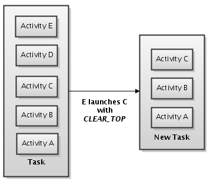

Android maneja las pilas de actividades asociadas a lo que se conoce como tareas. Una tarea es un conjunto de actividades con las que interactúa el usuario mientras realiza una función. Normalmente, una aplicación tendrá una tarea con una pila de actividades, aunque no tiene por qué ser siempre así.
El orden de las actividades en la pila no puede modificarse una vez introducidas. Sin embargo, sí puede configurarse de antemano, mediante el uso de parámetros en la etiqueta
En el manifest, tenemos la opción de especificar el atributo launchMode, que especifica cómo la actividad encajará en la tarea, por ejemplo:
<activity android:name=".MainActivity" android:launchMode="standard"/>Hay cuatro modos diferentes, veamos qué hace cada uno:
- standard: es el modo por defecto. El sistema creará una nueva instancia de la actividad en la tarea. La actividad podrá crearse más de una vez, y cada instancia puede pertenecer a una tarea diferente.
- singleTop: si ya existe una instancia de la actividad en la tarea actual, el sistema enrutará el intent a esa instancia. Como la actividad ya existe, no se llamará a onCreate, sino a onNewIntent.
- singleTask: el sistema crea una nueva tarea para instanciarla como la actividad principal de la tarea. Sin embargo, si ya existe una instancia de la actividad en una tarea separada, el sistema enrutará el intent a la actividad existente mediante onNewIntent.
- singleInstance: Sería lo mismo que singleTask, excepto que el sistema no lanzará ninguna otra actividad en la tarea que tiene la instancia. La instancia de la actividad será siempre la única que tenga la tarea. Cualquier actividad que se lance de este modo creará una nueva tarea.
Algunos parámetros que podemos utilizar en la función onStartActivity serán:
- FLAG_ACTIVITY_NEW_TASK: comienza la actividad en una nueva tarea. Si ya existe una tarea con esa actividad, la tarea se traerá al primer plano y la actividad ya existente recibirá la llamada de la función onNewIntent. El resultado sería el mismo que utilizar singleTask en el manifest.
- FLAG_ACTIVITY_SINGLE_TOP: si la actividad que se quiere lanzar es la actividad actual, la situada en lo alto de la pila, recibirá una llamada a onNewIntent en lugar de crearse una nueva. Sería lo mismo que usar singleTop en el manifest.
- FLAG_ACTIVITY_CLEAR_TOP: si la actividad que quiere lanzarse está ya en la tarea actual, en lugar de lanzarse una nueva instancia, todas las demás actividades que están sobre ella en la pila se destruirán y la actividad que ya existía, ahora en primer plano, recibirá la llamada a onNewIntent. Normalmente, este flag se utiliza junto con FLAG_ACTIVITY_NEW_TASK.